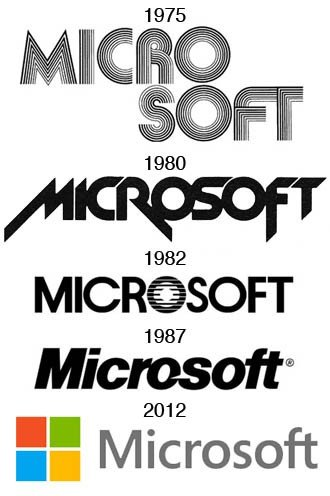

Bienvenidos
Explora la fascinante historia de Microsoft, desde sus humildes comienzos hasta convertirse en uno de los gigantes tecnológicos más importantes del mundo.
Contenido columna 1
Contenido columna 2
Fundación
Microsoft fue fundada por Bill Gates y Paul Allen en 1975, con la visión de llevar la informática personal a cada hogar y oficina.
"Un computador en cada escritorio y en cada hogar." - Bill Gates
Productos Clave
- Microsoft Windows
- Microsoft Office
- Xbox
- Windows 95
- Windows XP
- Windows 10
- Windows
- El sistema operativo más popular de Microsoft.
- Office
- Un conjunto de herramientas de productividad.
- Xbox
- Una consola de videojuegos de alta calidad.
Logros Clave
| Año | Evento |
|---|---|
| 1975 | Fundación de Microsoft |
| 1985 | Lanzamiento de Windows 1.0 |
| 2001 | Lanzamiento de la Xbox |
| Adquisición de LinkedIn (2016) | |